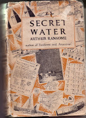
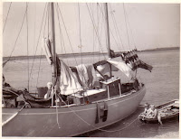
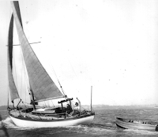

{kind=link}

Arthur Ransome’s eighth novel, Secret Water, is eighty this year. It’s his only Essex novel and this anniversary has prompted a 'hub' weekend of events in Harwich during the county's book festival in March. It also prompts the question what does it mean for a book to be eighty?
An eightieth birthday, celebrated in 2019, means that the book was published in 1939 -- and in
Secret Water’s case it's likely that most of it was written during that peculiarly unsettling year.
Publication date for Secret Water was 28th November 1939, when Britain had already been at war for almost three months. In those days the
period between a book’s delivery and its publication could be very short. In a letter to his mother, dated Sept 18th 1939, Ransome reports: ‘The new book, as I told you, has gone to the printers and I am now full blast with pictures and maps trying to get them done before the proofs arrive. I’ve done some big maps and a little one. Four full page pictures inked, six in pencil. Ten small pictures linked.’ [sic – though, having observed Claudia Myatt at work on her illustrations for the 'Strong Winds' series I can’t help wondering whether this word should also be 'inked’.] A tight schedule to catch the Christmas market.
Since the publication of Swallows and Amazons (Dec 1st 1930 ) there had only been two years without a new Arthur Ransome novel for Christmas. One such gap had been in 1935 when the author's invention had flagged between Coot Club and his Carnegie-winning Pigeon Post and then, in the aftermath of his brilliant Suffolk novel We Didn't Mean to go to Sea (completed September 1937, published 12.11.1937) Ransome's imagination refused to catch fire and there had been no new book for Christmas 1938.
Since the publication of Swallows and Amazons (Dec 1st 1930 ) there had only been two years without a new Arthur Ransome novel for Christmas. One such gap had been in 1935 when the author's invention had flagged between Coot Club and his Carnegie-winning Pigeon Post and then, in the aftermath of his brilliant Suffolk novel We Didn't Mean to go to Sea (completed September 1937, published 12.11.1937) Ransome's imagination refused to catch fire and there had been no new book for Christmas 1938.
A few significant letters survive from the early part of that year: one (in January) shows Ransome tempted by the historical novel that he never wrote (The River Comes First) and also, more strongly, by the Norfolk Broads detective story that eventually became The Big Six (Christmas 1940). Another letter (in March 1938) suggests that his heart was more deeply involved with his new boat (Selina King, then being built at Pin Mill) than with any new book:
The new ship is getting along. Her keel is laid down and her ribs have been shaped and soon it will be possible to see her whole skeleton.
But as for a new book, I haven't got one. I had one notion but after chewing it over for a bit came to the conclusion that I didn't really like it. Another, a much better notion, is still only a glimmer. There never was in the whole history of the world anybody who had such trouble inventing stories. Once I have got a story I have a gorgeous time with it, playing with it, but I can't play in a hurry, and if my story doesn't come along pretty quick, I shall have to give up all hope of a new book this year. Thank goodness for the boat.'
This letter (written to the Junior Literary Guild of America) is, I have to say, the single letter that makes me love AR. In it he writes:
And now then, about this writing for children. I know absolutely nothing about it, for the very simple reason that I NEVER, NEVER do it. Unless I can write something that is good fun FOR ME, not for somebody else, I cannot write at all. The children who read my books are never addressed. I don't even know they are there. They merely overhear me larking about for my own fun, not for theirs. It is just good luck for me that some of them seem to enjoy the same things that I enjoy. I can't claim any credit for it. There is no intention in it. It is simply an accident. It always astonishes me. After all, I am 54 and it is a bit surprising that their tastes and mine should coincide even sometimes.
Writing FOR children is to me something almost incredible. I cannot imagine how it is done. andI can;'t imagine why it ever should be done. A book written consciously FOR some audience other than its writer is almost sure to be pulled out of focus by its purpose, so that it cannot be a good book...whether for children or for grown-ups. That is why I hate the word 'juvenile' applied to my books. 54 is not juvenile, not by long chalks. And they are written for me.
Arthur Ransome, my friend. you are so spot on right. My books also are written for ME -- and perhaps also for the friends and family members who seem to see things that same way. Childish adults? -- or adult children? ... I really don't know. But I think, possibly, you did.
 |
| Peter Duck off Stone Point, Walton Backwaters 1958 |
{kind=link}
When I read your Secret Water as a child -- lying in my cosy bunk on board your former yacht Peter Duck -- and probably somewhere near one of those favourite anchorages, I remember that what I mainly appreciated (as a child) was your understanding of mud as a gorgeous material for play. Your Secret Water characters seize every opportunity to bedaub themselves (though I fear today they would fall foul of the 'blacking up' police). My brothers and I were simply thrilled by its slipperiness. And in the Walton Backwaters, where your Essex story is set, there are mud flats and mud mounds, mud for sculpture and mud as missile.
Here's my father, George Jones's, log book entry for 31st August 1957, by which time you had given up novel writing and given up also on the East Coast of England. (You were almost 74 by then; he was 39 and I was 3 1/2)
'Entered Walton Backwaters about 1630. Anchored near Stone Point in 3 fathoms -- just afloat at low water. Went ashore with buckets and spades. Lovely starlit still night with sounds -- peewit, whistling kettle, generator running on Horsey Island, voices of campers on Stone Point, brilliant phosphorescence, seagulls on dried out Pye Sands, smells of the sea. Took dinghy and sculled away to Hamford Water. Dead still and wonderful reflections from Dovercourt. Turned in 2345
1st Sept Raining and blowing hard 0740 -- found ourselves blown ashore on side of mud. Panic to get ballast up and boom out to stop tipping down cant edge! Ashore about 1130. Took 'Corky' to find soundings for secret passage. Stiff and wet sail back against over-and-go. Ashore for skating on mud -- Julia covered with mud, regular mudlark!'
In Secret Water your child-characters are marooned in this mud-shaped landscape. But what, I wonder finally gave you the enthusiasm to fling yourself into writing this story? There had been an anxious letter from your publisher in Jan 1938: 'It's a bit serious about the new book. Won't the Walton Creek idea work out at all?' but Julian Lovelock in his literary study Swallows Amazons and Coots confirms that it wasn't until September 1938 that you committed to the idea and almost all the writing took place as war inexorably hove over the horizon during 1939. You had fun during the summer of 1939, with your new boat (Selina King) and your young friends and your visits to the arctic explorer and ornithologist David Haig Thomas, who lived on Horsey Island then but who would be dead on the Normandy beaches by the time WW2 was done. Burt you probably knew it couldn't last. War as play is a noticeably more ambivalent concept then it had been in the more joyous Lakeland days of Swallows and Amazons.
Could the Munich crisis of September 1938 have had any bearing on your decision to commit? You wrote to your mother on October 2nd 1938
'London was a queer place last week...; sandbags, etc., but the queerest of all happenings was the decision of the uneducated idiots in charge of evacuation, to send hundreds of children to Pin Mill Levington and Shotley{...} not realising that these places are in the very heart of an area which will be a military objective.' How much more reassuring --- when Father is summonsed to duty by the hated First Lord of the Admiralty -- to take the children deep into the trackless interior and maroon them on the single inhabitable island
Thinking of the date as well as the place when Secret Water was written tempts me to spin it as an evacuation novel. Then as an exploration into the interior -- of our minds as well as geographical space.There so much to discuss.
My task, among the wonderfully varied selection of events at the 'Secret Water' weekend at the Essex Book Festival, is to talk about the 'Life and Legacy' of Arthur Ransome -- together with Peter Willis, author of Good Little Ship , the biography of Nancy 'Goblin' Blackett (the yacht who starred in both We Didn't Mean To Go To Sea AND Secret Water) and Sophie Neville, who played Titty in the delightful 1974 'Swallows and Amazons' film and who is currently President of the Arthur Ransome Society. It's a book that seems to have been with me all my life, from long before I actually read it, from the time aged 3 1/2 when I first came ashore from Peter Duck and began larking about in the mud.
Please join us on Sunday March 3rd 2019. If that's not possible, then wish Secret Water a happy 80th birthday and ponder a while what it might have felt like to be 'playing about' with an adventure story over the summer of 1939.
Could the Munich crisis of September 1938 have had any bearing on your decision to commit? You wrote to your mother on October 2nd 1938
'London was a queer place last week...; sandbags, etc., but the queerest of all happenings was the decision of the uneducated idiots in charge of evacuation, to send hundreds of children to Pin Mill Levington and Shotley{...} not realising that these places are in the very heart of an area which will be a military objective.' How much more reassuring --- when Father is summonsed to duty by the hated First Lord of the Admiralty -- to take the children deep into the trackless interior and maroon them on the single inhabitable island
Thinking of the date as well as the place when Secret Water was written tempts me to spin it as an evacuation novel. Then as an exploration into the interior -- of our minds as well as geographical space.There so much to discuss.
My task, among the wonderfully varied selection of events at the 'Secret Water' weekend at the Essex Book Festival, is to talk about the 'Life and Legacy' of Arthur Ransome -- together with Peter Willis, author of Good Little Ship , the biography of Nancy 'Goblin' Blackett (the yacht who starred in both We Didn't Mean To Go To Sea AND Secret Water) and Sophie Neville, who played Titty in the delightful 1974 'Swallows and Amazons' film and who is currently President of the Arthur Ransome Society. It's a book that seems to have been with me all my life, from long before I actually read it, from the time aged 3 1/2 when I first came ashore from Peter Duck and began larking about in the mud.
 |
| Arthur Ransome sailing Selina King, summer 1939 |
{kind=link}
Please join us on Sunday March 3rd 2019. If that's not possible, then wish Secret Water a happy 80th birthday and ponder a while what it might have felt like to be 'playing about' with an adventure story over the summer of 1939.